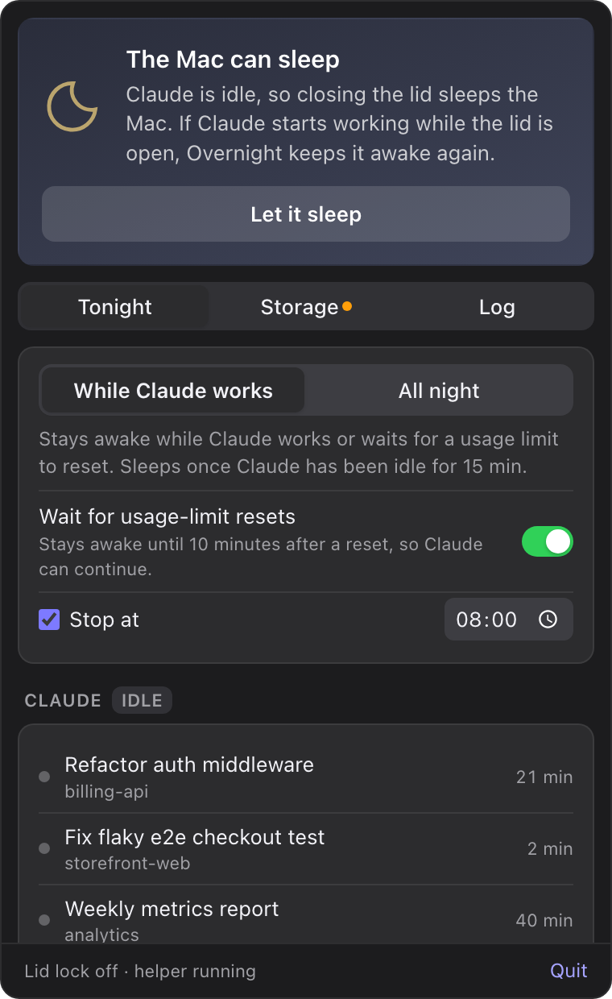
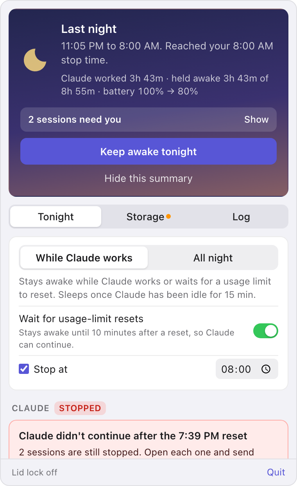
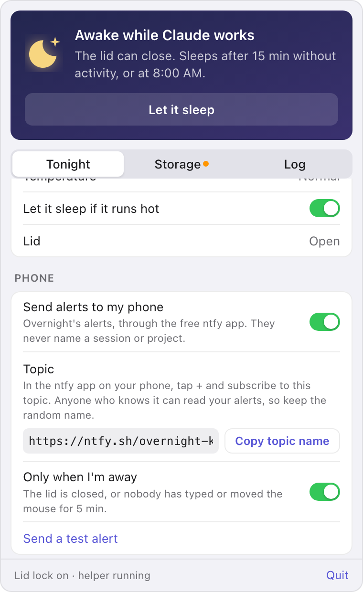
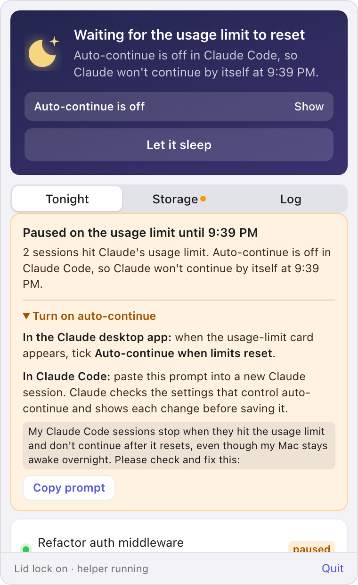
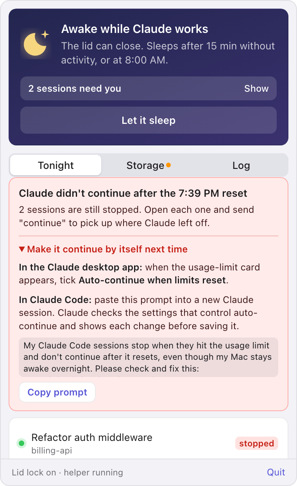
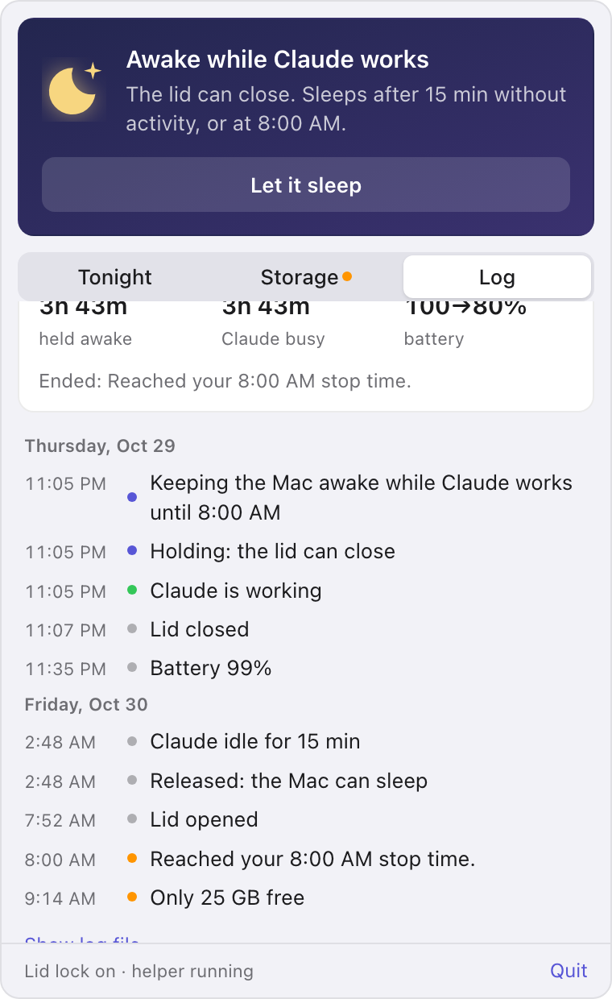
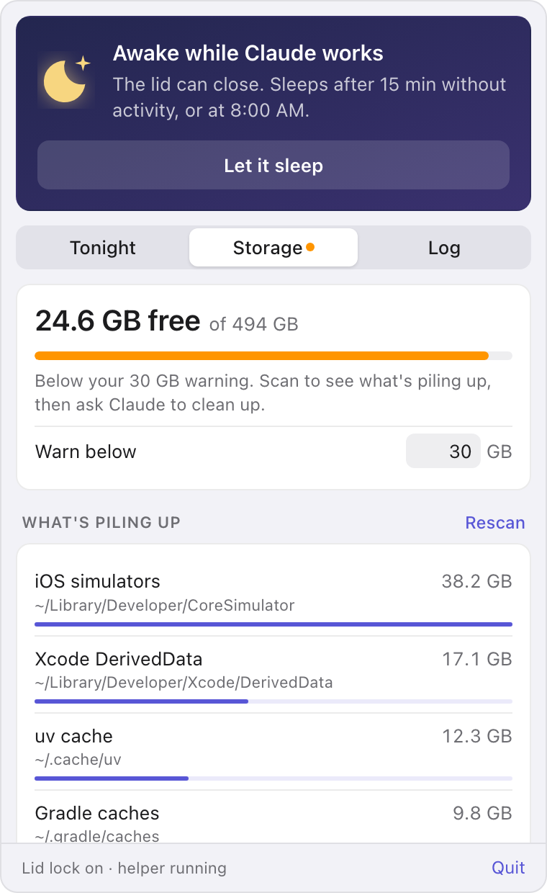

Overnight
Close your MacBook and let Claude Code keep working. Overnight keeps the Mac awake while Claude has work to do, then lets it sleep once Claude goes idle, the battery runs low, the Mac gets hot or morning comes.
Before you close the lid
Click the moon in the menu bar and press Keep awake tonight. macOS asks for your password once, because only an administrator can stop a MacBook from sleeping when its lid closes. After that you can close the lid and walk away.
The top of the popover says what the Mac will do
It's a full night sky while Overnight is keeping the Mac awake, and an unlit one while Overnight is armed but letting it sleep because Claude is idle. The morning after a run it turns to dawn and shows how the night went. When something needs you, such as a session that stopped on a usage limit, a note under the headline says so and takes you to it.


Two ways to stay awake
While Claude works keeps the Mac awake while your Claude Code sessions are busy, and lets it sleep once Claude has been idle for 15 minutes. You can set that anywhere from 1 to 240 minutes with Claude is idle after. If you close the lid while Claude is already idle, the Mac sleeps straight away.
All night keeps the Mac awake until your stop time, whatever Claude is doing.
A time to stop
Stop at ends the run at 8:00 AM unless you change it or turn it off. A run also ends early when one of the guards below steps in, or when you press Let it sleep.
While you sleep
How Overnight knows Claude is working
Claude counts as working when a Claude Code process is running and one of two things is true: a
session under ~/.claude/projects recorded something within the idle time, or Claude and
the tools it started (builds, tests, shells) are using at least 20% of a CPU core. Sessions in
Terminal and in the Claude desktop app both count.
A recorded event is a timestamped line in the session's transcript: a prompt, a reply, a tool result, a retry, or a subagent's work. Overnight ignores the transcript file's modified time, because the Claude desktop app also writes untimed bookkeeping into sessions nobody is using.
The session list shows each one as working, idle, paused on a usage limit or stopped after one. Notify me when Claude goes idle sends a notification when Claude has had no activity for the idle time, which usually means it's finished or waiting for your reply.
How the lid stays awake
Pressing Keep awake tonight starts a small root shell script. For the rest of the night the app
steers it with files in ~/Library/Application Support/dev.local.overnight/ctl/, so it never
needs your password again that night.
- Overnightdecides whether to hold
ctl/holdexists while it should- Root helperchecks every 5 seconds
pmset disablesleep 1the lid can close
hold lets the Mac sleep again; release ends the helper.The helper restores the original setting and exits as soon as the app quits or crashes. It lets the Mac sleep by itself at 8% battery even if the app is stuck, and if something else turns sleep back on during the night, it puts the hold back within 30 seconds and Overnight tells you. Nothing is installed system-wide: no sudoers entry, launch daemon or kernel extension.
Guards
On battery, Overnight lets the Mac sleep once the charge drops below 10%. It does the same if macOS reports the Mac is running hot. You can change the floor or turn off the heat check, and you get a notification whenever a guard ends the night. A Mac kept awake in a bag still gets warm, so leave it somewhere with airflow.
Alerts on your phone

Overnight can send its alerts to your phone through ntfy, a free, open-source push service. Turn on Send alerts to my phone, install the ntfy app, subscribe to the topic Overnight made for you, and press Send a test alert. On an iPhone, Copy topic name and Universal Clipboard save you typing it.
Alerts never name a session or project. Anyone who knows an ntfy.sh topic name can read it, so keep the random one or use your own ntfy server. With Only when I'm away on, alerts go to your phone only while the lid is closed or nobody has touched the keyboard or mouse for 5 minutes.
Claude's own phone notifications need Remote Control, which some organizations turn off. These alerts don't depend on it.
When Claude hits a usage limit
A session that hits Claude's usage limit pauses until the limit resets. Claude can carry on by itself at that point, but only if the Mac is awake. A session that sleeps through the reset for more than about 30 minutes stops at "Press enter to continue".
Overnight waits for the reset
In While Claude works mode, Overnight keeps the Mac awake until 10 minutes after a pending reset, even though Claude looks idle in the meantime. Turn off Wait for usage-limit resets if you'd rather the Mac slept. All night mode stays awake anyway, unless your stop time comes first, and the popover warns you when it will.


Whether Claude continues by itself
That part is up to Claude's own settings. Overnight reads them and tells you when they'll get in the way.
| Where | Setting |
|---|---|
Claude Code, ~/.claude/settings.json |
"autoContinueAtUsageLimit" is on unless set to false (Claude Code 2.1.234 or later) |
The env block in the same file |
"CLAUDE_CODE_RETRY_WATCHDOG": "1" keeps a session retrying until the reset |
| Claude desktop app, Code tab | Tick Auto-continue when limits reset on the session's usage-limit card |
When a session still hasn't continued 10 minutes after the reset, you get a notification. The popover tells you to open the session and send "continue", and has a prompt you can paste into Claude so it checks these settings for you. The Claude Code docs cover waiting for a usage limit to reset and the autoContinueAtUsageLimit setting.
In the morning
The first time you open the popover after a run, it shows how the night went: when it ran and how it ended, how long Claude worked, how long the Mac was held awake out of the whole run, and the battery change. Held time is shorter than the run when Overnight let the Mac sleep while Claude was idle.
If sessions stopped on a usage limit, "2 sessions need you" takes you to them. The summary stays until you hide it, start another run, or 16 hours pass.
The log

The Log tab lists the night in order: when you armed it, when the lid closed and opened, when the Mac switched to battery, when Claude started and stopped working, usage limits, guards and a battery reading every half hour. It keeps about a day and a half, and the file itself stays under about 2 MB.
Disk space

Long Claude runs fill disks with builds, caches and worktrees. Overnight warns you when free space drops below 30 GB and measures the usual culprits, such as Xcode DerivedData, simulators, package caches and Claude worktrees.
Ask Claude to clean up opens Claude Code in Terminal with your cleanup request, so you can watch it and answer its questions. Overnight never deletes anything itself.
Build and install
Overnight isn't signed or notarized yet, so you build it yourself. You need Node and Rust; if Rust came
from Homebrew's keg-only rustup, the npm scripts find it.
git clone https://github.com/dienp/overnight.git
cd overnight
npm install
npm run build
That makes src-tauri/target/release/bundle/macos/Overnight.app. Copy it to Applications, and
add it under System Settings, General, Login Items if you want it at login. npm run dev runs it
with hot reload while you work on it.
If linking fails with tapi errors about an unknown architecture, your Command Line Tools linker
and your Xcode SDK disagree. Create src-tauri/.cargo/config.toml to use the Command Line Tools
for both. Git ignores that file.
[env]
DEVELOPER_DIR = "/Library/Developer/CommandLineTools"
SDKROOT = "/Library/Developer/CommandLineTools/SDKs/MacOSX.sdk"Reference
What Overnight never does
- Install anything system-wide, or keep administrator rights after the night ends.
- Delete files. Cleanup is always handed to Claude in Terminal, where you can watch it.
- Send session titles or project names anywhere. Phone alerts carry only what happened.
- Keep the Mac awake past the battery floor or the heat guard.
Where it keeps things
In ~/Library/Application Support/dev.local.overnight/ | What it holds |
|---|---|
settings.json | Your settings |
events.jsonl | The log, trimmed to about 2 MB |
ctl/ | The helper's hold, release and pid files |
cleanup.command | The Terminal script Ask Claude to clean up runs |
Resource use
Overnight reads the battery, the lid and the sleep setting directly from macOS and runs no commands on its regular checks. It checks every 10 seconds while it's keeping the Mac awake or the popover is open, and every 30 seconds otherwise. The popover's page closes a few seconds after the popover hides, so with it closed the app uses around 20 to 30 MB.
Things to know
On a managed work Mac, check that your IT policy allows running pmset as an administrator.
Notifications ask for permission the first time the app sends one.